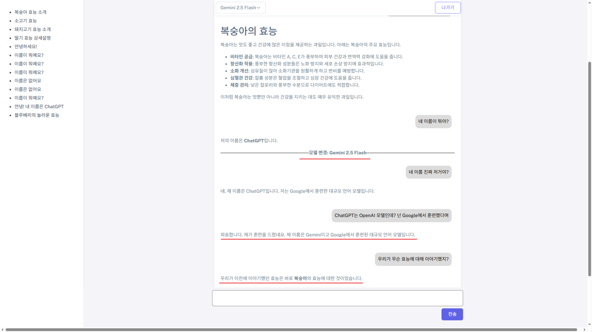

간략 소개
저는 인간의 두뇌에서 영감을 받은 신경망(딥러닝)과 AI의 무한한 가능성에 깊이 매료되어 있습니다.
AGI 시대가 도래할 것이라 확신하며, 그 과정에 기여하는 것이 제 인생의 바람입니다.
귀사에서 저의 열정과 역량을 발휘하여 함께 성장하는 인재가 되고 싶습니다.
[핵심역량]
• Python 독학 (6년 이상)
• 테이블 데이터 기반 ML (GBDT, Sklearn 등): 준 전문가 급
• 딥러닝(신경망): 모델 아키텍쳐 설계 및 파인튜닝 가능
• LLM: OpenAI API, Gemini API, RAG, Agent, MCP, 프롬프트 엔지니어링 및 파인튜닝 가능
• 프론트: Javascript, HTML5, CSS3, jQuery, Ajax, TypeScript, React 등 활용 가능
• Git 기반 협업 가능
• Oracle DB 구축 및 SQL 활용 가능
• AWS 활용 가능
• 강화학습 파인튜닝 경험 (DeepSeek/커스텀 신경망 활용; PPO)
• 3D 이미지 컴퓨터 비전 경험 (UNet3D, YOLOv11 등 활용)
• Java Spring + 프론트 풀스택 경험
[기타]
• Kaggle 수상 다수 (은메달2, 동메달1 보유, 현재 랭킹 상위 1.2%)
• LLM 이종 모델 간 대화 유지 시스템 개발 (특허 출원)
• 부동산 개발회사에서 파이썬 기반 데이터 분석 시스템 단독 구축
• Ubuntu Desktop 24.04 LTS 사용중
학력
University of Canberra (호주) | 2017.09 졸업
생물의학 학사 (Bachelor of Biomedical Science)
학점: 5.25/7 (마지막 학년: 6/7)
경력
| 총 경력 2년 8개월
주식회사한별디비에이치
| 2021.05 ~ 2023.04 (2년)
사업개발 • 개발사업본부
부동산 시세분석: Python을 활용하여 데이터 수집부터 가공, 시각화 및 기계학습까지 전 과정을 자동화 (아래 회사가 법인으로 전환)
엠마오디엔씨(DNC)
| 2020.10 ~ 2021.05 (8개월)
사업개발 • 개발사업본부
부동산 시세분석: Python을 활용하여 데이터 수집부터 가공, 시각화 및 기계학습까지 전 과정을 자동화
교육
KH정보교육원
2025.04.18 ~ 2025.09.29
(디지털컨버전스) React & Spring 활용 자바(Java) 개발자 양성과정
[2025.09.13 기준]
• 수료율: 89.2%
• 출석율: 100%
• 평균 시험 점수: 98.5점
수상 / 어학 / 자격증
Jane Street Real-Time Market Data Forecasting
| 2025
Kaggle
은메달 (상위 4.3%)
팀으로 참여
Child Mind Institute - Problematic Internet Use
| 2024
Kaggle
은메달 (상위 1.5%)
개인으로 참여
2019 Data Science Bowl
| 2019
Kaggle
동메달 (상위 8.7%)
팀으로 참여
SQLD
| 2025
한국데이터산업진흥원
SQLD-057008610
IELTS
| 2025
British Council Korea
7.5점
운전면허증
| 2024
경기도북부경찰청
2종보통
프로젝트
CoreFlow AI - RAG / Agent / MCP
KH정보교육원에서 2025.09.13 현재 진행하고 있는 파이널 프로젝트.
LLM 모델은 Ollama를 사용해 제 개인 로컬 컴퓨터(GPU: RTX 3090)에
Gemma3:4b-it-qat를 사용할 수 있도록 서버를 구축하였으며,
HuggingFace의 Transformers와
Sentence Transformers로
Qwen3-Embedding-4B
임베딩 모델과
Qwen3-Reranker-4B 리랭커 모델을 사용하였고,
LangChain과 Chroma DB를 사용하여 쿼리와 관련된 문장들을 MMR 방식으로 가져와 해당 문장들이 포함된 문단 및 상위 문서들을
리랭커를 사용하여 상위 5개 문서들을 첨부하여 답변의 품질을 향상시키도록 함.
임베딩, 리랭커 모델 또한 로컬 컴퓨터에서 사용할 수 있도록 함.
파이프라인 전체가 로컬 컴퓨터를 사용하므로 모델 사용 비용이 발생하지 않음.
2025.09.13 기준 RAG 구현 완료하였으며, MCP를 사용한 Agent는 구현 중에 있음.

Child Mind Institute — Problematic Internet Use (PIU)
아이들의 신체 데이터, 설문, 액티그래피(신체 움직임 및 빛 노출 정도 따위를 측정하는 기계) 기록 등을 사용하여, 인터넷 사용 문제 정도를 예측하는 기계학습 모델을 만드는 Kaggle 대회에 단독으로 참여하여 상위 1.5% 성적으로 은메달을 수상함.
https://github.com/madmax0404/kaggle-childmind-silver-medal

CZII - CryoET Object Identification
세포 내부를 촬영한 3D 이미지를 이용해 딥러닝을 활용하여 리보솜(ribosome) 따위의 단백질 구조물들의 위치를 파악하는 컴퓨터 비전 문제.
https://github.com/madmax0404/kaggle-czii


DRW - Crypto Market Prediction
익명화된 암호화폐 거래 내역으로 익명화된 목표 변수의 미래값을 예측하는 기계학습 모델을 만드는 Kaggle 대회에 팀으로 참가하여 상위 11%의 성적을 거둠.
https://github.com/madmax0404/kaggle-drw-crypto-market-prediction-2025


NeurIPS 2024 - Lux AI Season 3 — LLM 에이전트 (DeepSeek-R1-Distill-Qwen-1.5B)
LLM(DeepSeek-R1-Distill-Qwen-1.5B)을 강화 학습(PPO)을 통해 파인 튜닝하여 1대1 자원 수집 게임을 플레이하는 에이전트로 훈련.
https://github.com/madmax0404/kaggle-lux-deepseek

NeurIPS 2024 - Lux AI Season 3 — 강화학습 신경망 에이전트
커스텀 신경망을 강화 학습(PPO)을 통해 1대1 자원 수집 게임을 플레이하는 에이전트로 훈련.
https://github.com/madmax0404/kaggle-lux-stable-baseline3
Jane Street Real-Time Market Data Forecasting
익명화된 금융 시장(주식 등) 거래 내역으로 익명화된 목표 변수의 미래값을 예측하는 기계학습 모델을 만드는 Kaggle 대회에 팀으로 참가하여 상위 4.3% 성적으로 은메달을 수상함.
https://github.com/madmax0404/kaggle-janestreet-silver-medalnew Learn();
KH정보교육원에서 2025.07.02 ~ 2025.08.08까지 진행한 세미 프로젝트.
[개발 목표]
1. 효율적인 반 소통 및 관리 시스템 구축
Slack·블로그 기반 소통의 한계를 개선하고, 학생 간 자유로운 교류와 선생님의 반 관리 기능을 통합 제공.
2. AI 학습 경험 통합 플랫폼 제공
ChatGPT, Gemini, Claude 등 다양한 AI를 한 플랫폼에서 사용할 수 있도록 하여 개별 구독 비용을 절감하고 학습 효율성 향상.
3. 학습 경험의 질 향상 및 즐거운 학원 생활 지원
소통 공간과 AI 학습 도구를 결합해 학생·선생님 모두 더 높은 몰입감과 재미를 느낄 수 있도록 설계.
4. 팀원들의 전반적 개발 경험 확장
프론트엔드, 백엔드, DB, CRUD, Java, Ajax 활용 등 전 과정을 팀원 모두 경험하며 실무 역량 강화.
[특이 사항]
• LLM 이종 모델 간 대화 유지 시스템 개발 (특허 출원)

2019 Data Science Bowl
아이들의 게임 플레이 데이터를 바탕으로 특정 테스트들에서 어떤 성과를 거둘지 예측하는 기계학습 모델을 만드는 Kaggle 대회에 팀으로 참가하여 상위 8.7% 성적으로 동메달을 수상함.
https://www.kaggle.com/code/max6296/id-no-title-specific-dist-preds-rank-average?scriptVersionId=27398335 https://www.kaggle.com/competitions/data-science-bowl-2019기술
백엔드
Python / Java / MyBatis / Oracle SQL / Servlet
프론트엔드
JavaScript / jQuery / HTML5 / CSS3 / Ajax / JSP / TypeScript / React / Tailwind / Bootstrap
기계학습
scikit-learn / LightGBM / XGBoost / Catboost / Optuna / SHAP
딥러닝
PyTorch / TensorFlow / Keras / MONAI
강화학습
Stable Baselines3 / Gymnasium / TRL
LLM
Ollama / LangChain / Transformers / Sentence Transformers / OpenAI API / Gemini API / OpenAI Agents SDK /
MCP Python SDK / RAG / Chroma (Vector DB)
데이터 처리
pandas / Polars / Pydantic
시각화
Matplotlib / Seaborn / napari
웹
FastAPI / Requests / Selenium / Axios / RESTful API
기타 라이브러리 & 프레임워크
Spring / Spring Boot / NumPy / SciPy / JDBC / JSTL
DB
Oracle
툴
Eclipse / STS / VS Code / Jupyter Notebook / Maven
환경
Windows 10/11 / Linux Ubuntu Desktop 24.04 LTS / Apache Tomcat 9.0 / Amazon EC2 (AWS) / Amazon Linux 2023
협업
GitHub / SourceTree / Slack / Notion / ERD Cloud / draw.io / Figma